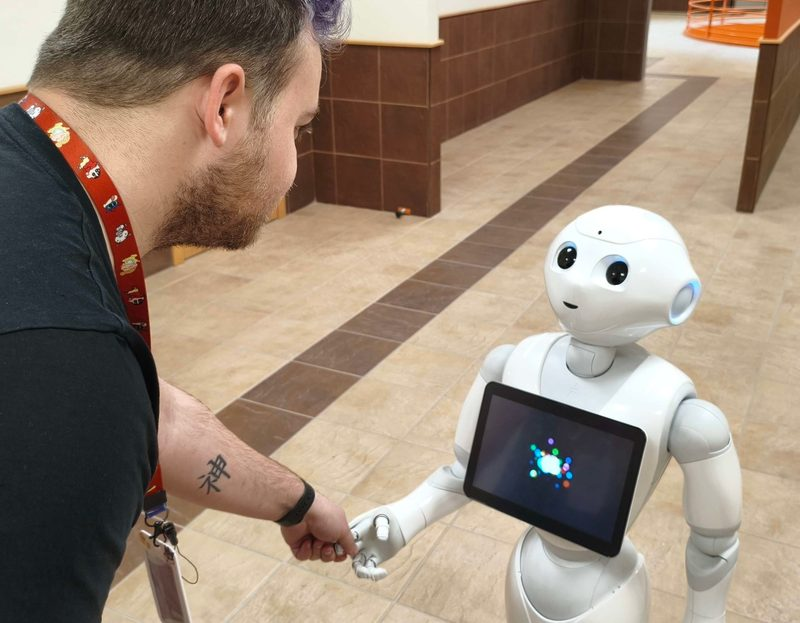
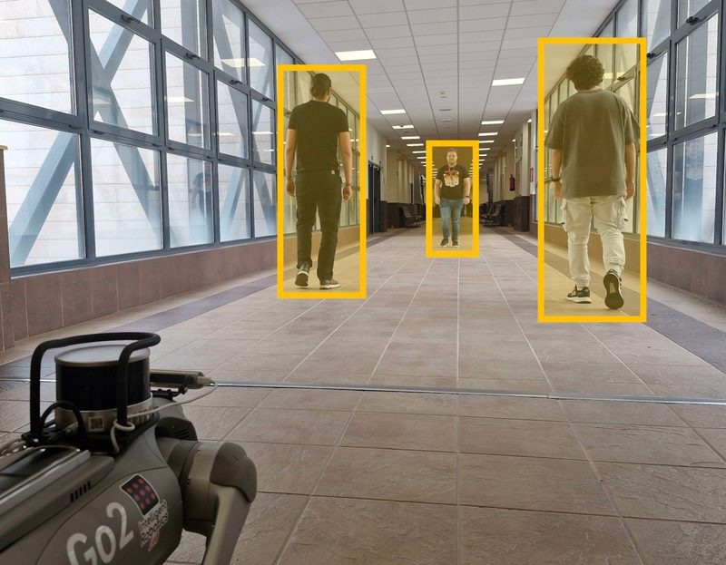
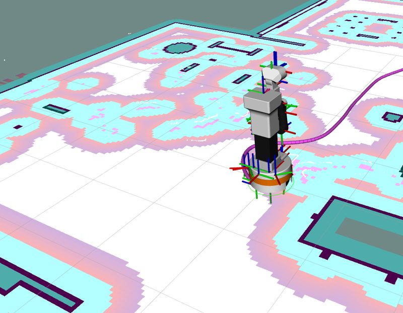
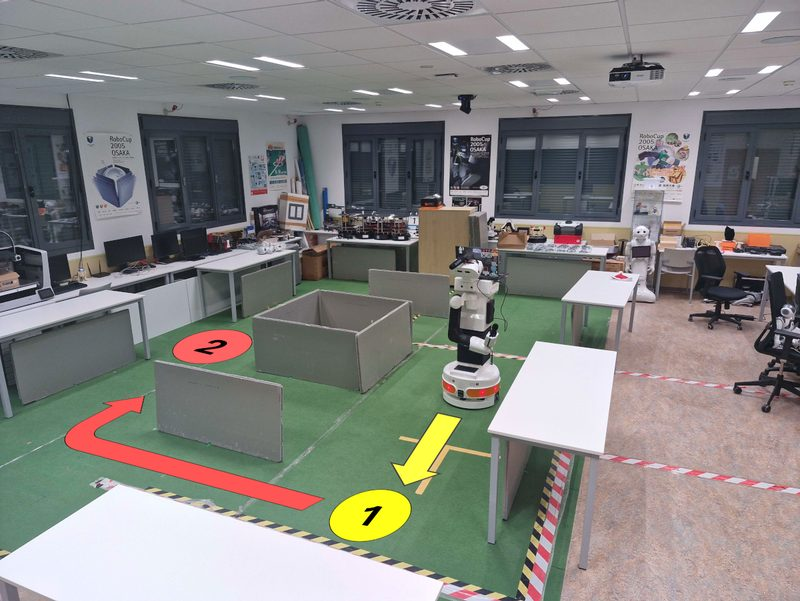

Human-Robot interaction
Designing robots that understand and respond to human emotions and social cues. We enable intuitive, empathetic interactions for applications in the fields of social and medical robotics.
At the Intelligent Robotics Lab, our research is driven by the challenge of solving complex robotics problems, fusing AI, automation, and perception to push the field forward.

Designing robots that understand and respond to human emotions and social cues. We enable intuitive, empathetic interactions for applications in the fields of social and medical robotics.

Building systems that allow robots to see, and understand the world accurately. Our work focuses on object detection, SLAM, and visual attention using onboard cameras and LiDAR sensors.

Developing autonomous navigation that adapts to dynamic environments. We enable safe, efficient movement in real-world settings, both in indoor and outdoor environments.

Creating intelligent planning for complex, multi-step tasks. Our research helps robots prioritize and execute goals independently through innovative cognitive architectures.
At the Intelligent Robotics Lab, we push the boundaries of robotics and artificial intelligence to create smarter, more adaptable, and human-centered robotic systems. Our interdisciplinary team of researchers and engineers specializes in cutting-edge fields such as robotics, computer vision, human-robot interaction, and autonomous systems.
Through innovative research and real-world applications, we aim to develop intelligent robots that enhance daily life and contribute to scientific advancements. Our collaborations with other universities, industrial actors, and international institutions drive our mission to shape the future of robotics.
As a research group, we belong to the School of Engineering at Universidad Rey Juan Carlos, in Fuenlabrada (Spain).